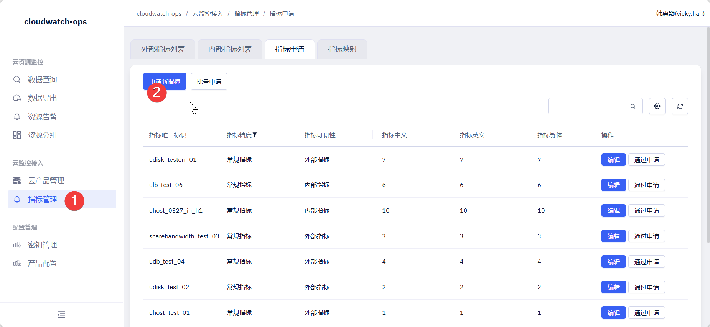
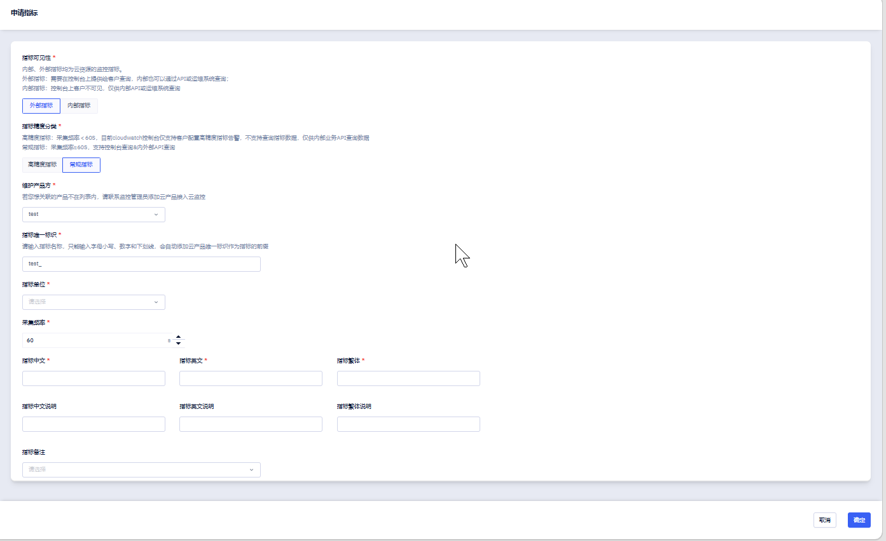
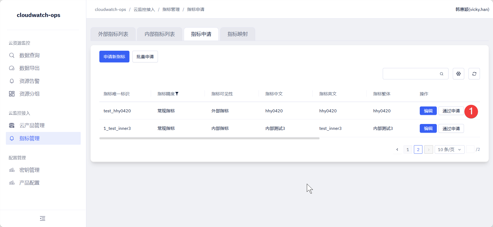
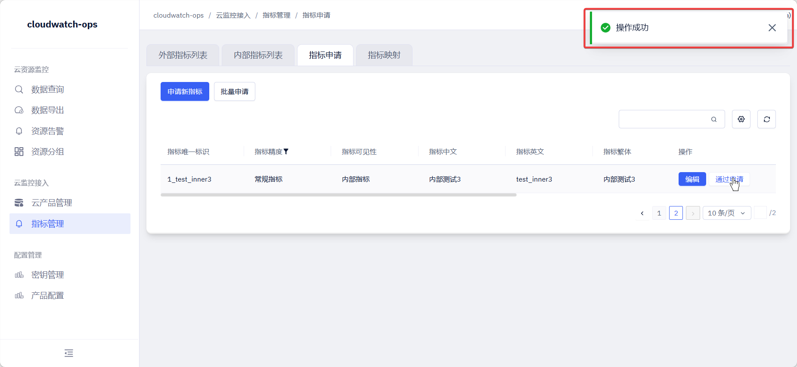
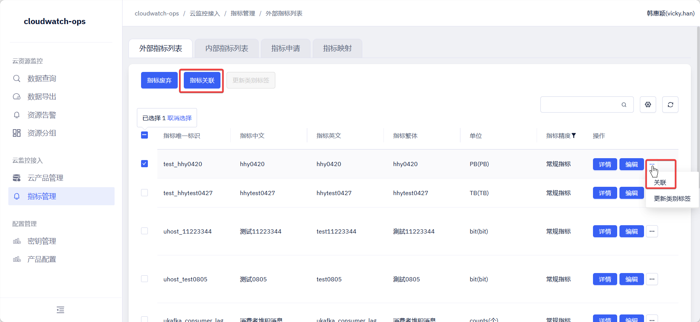
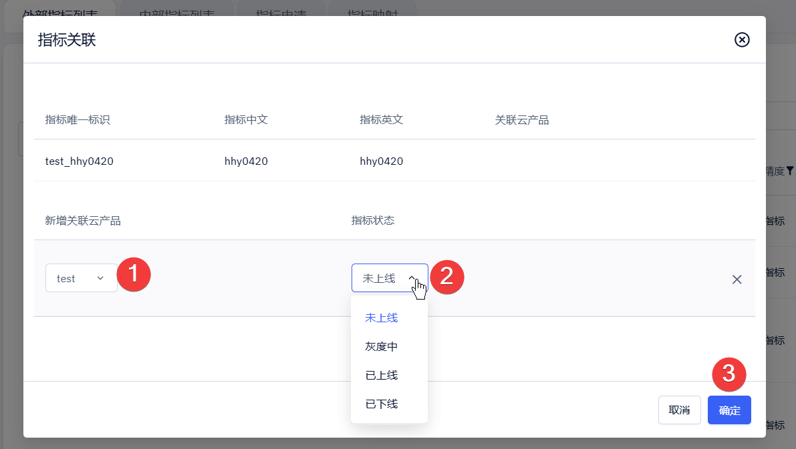
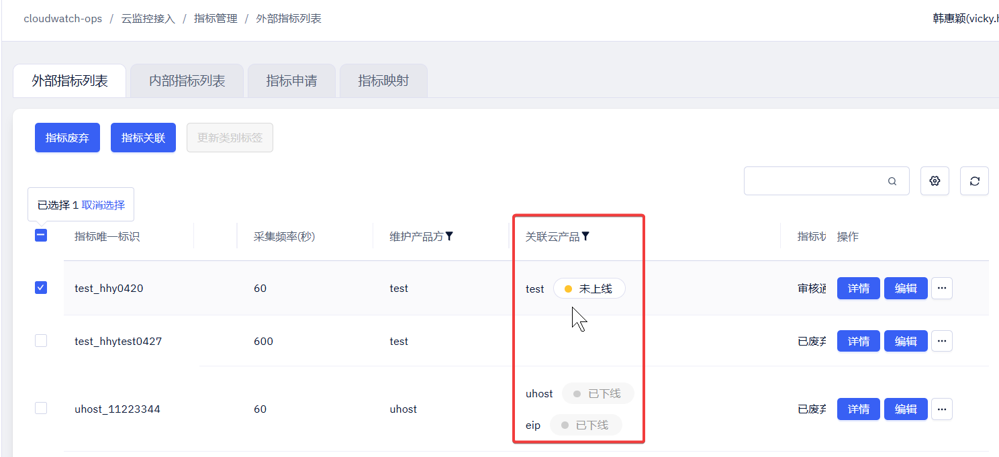

步骤 01
🚪进入指标管理页面
从左侧导航的「配置管理」区域，点击 指标管理 菜单 ①，切换到「外部指标」Tab，点击右上角的 新建指标 按钮 ② 开始申请新指标。

步骤 02
✏️填写申请指标表单
在「申请指标」页面中填写指标的完整配置信息。按顺序确认每个字段后，点击右下角 确定 提交申请。

| 字段 | 说明 | 示例 |
|---|---|---|
| 指标可见性 | 选择 外部指标 表示在控制台对客户展示并支持查询；选择 内部指标 表示仅供内部 API 或运维系统使用，控制台不可见 | 外部指标 |
| 指标精度分类 | 选择 高精度指标（采集频率 < 60s，仅支持内部 API 查询）或 常规指标（采集频率 ≥ 60s，支持控制台与内外部 API 查询） | 常规指标 |
| 维护产品方 | 下拉选择该指标归属的云产品；若列表中没有目标产品，需先联系监控管理员将其接入云监控 | test |
| 指标唯一标识 | 仅支持小写字母、数字和下划线；系统会自动拼接云产品唯一标识作为前缀 | cpu_usage_idle |
| 指标单位 | 下拉选择指标值的计量单位，会与数据一起展示给用户 | % |
| 采集频率 | 数据采集时间间隔，单位秒，默认 60s；高精度指标需设置小于 60s 的值 | 60 |
| 指标中文 / 英文 / 繁体 | 指标在控制台对应语言环境下的显示名称，三种语言均为必填 | CPU 空闲率 / CPU Idle / CPU 空閒率 |
| 指标中文 / 英文 / 繁体说明 | 指标的业务含义描述，帮助使用者理解指标用途；三种语言均为选填 | CPU 处于空闲状态的时间占比 |
| 指标备注 | 选填，可附加额外的分类或标注信息 | — |
💡
建议指标唯一标识使用小写字母加下划线的命名风格，并与采集端上报的 key 保持一致，便于后续数据对接和排查。
步骤 03
☑️审核通过申请
提交后，刚填写的指标条目会出现在「申请列表」中。找到对应记录，点击操作列的 通过申请 ① 即可完成审核。

⚠️
注意建议申请人与审核人交叉负责。如果是产品经理提交的申请，应由产品研发同学审核通过；反之亦然，避免一人独审带来的口径风险。
步骤 04
🔍查看指标条目
审核通过后，新指标会进入「外部指标」或「内部指标」列表。在列表中找到刚审核通过的指标 ①，确认基础信息无误后准备进行下一步的产品关联。

步骤 05
🏷️为指标关联云产品
选中目标指标 ①，点击 指标关联 ② 。支持单个指标关联和批量指标关联。

步骤 06
⚙️设置指标状态
关联云产品后，需为指标设置上线状态 ①。当前共有 未上线、灰度中、已上线、已下线 四种状态，含义如下：

| 状态 | 含义 | 可见范围 |
|---|---|---|
| 未上线 | 指标尚未对外开放，处于内部调试阶段 | 仅内部接口可查询 |
| 灰度中 | 仅对在云产品管理页面配置了灰度的 Company ID 开放 | 灰度 Company ID 可查询 |
| 已上线 | 指标正式对外开放，所有用户均可使用 | 控制台展示，用户可查询 |
| 已下线 | 指标已停止使用，不再上报数据 | 仅内部接口可查询 |
💡
建议指标初次设置状态时建议选择
未上线，等数据上报、口径验证都完成后再切换到 灰度中 或 已上线，避免脏数据直接暴露给用户。
步骤 07
🎯验证接入结果
状态设置成功后，页面上对应指标的「状态」列会更新为最新值 ①。根据所选状态，可以通过查询接口、云鹰查询入口、控制台页面验证指标是否能被正常查询。

ℹ️
提示若状态为
灰度中，需要先到「云产品管理」页面将测试 Company ID 加入灰度名单，才能在控制台看到该指标。
🎉
全部完成啦
新指标已完成接入并设置好状态。后续可根据数据上报与验证情况，逐步将状态从「未上线」推进到「灰度中」与「已上线」，让用户在控制台看到这个指标。
💬常见问题
申请提交后没有「通过申请」按钮怎么办？
通常是当前账号没有审核权限。请联系拥有指标审核权限的同事（产品经理以及对应的研发人员）登录后再操作，或联系监控产品经理添加该产品的指标操作权限。
指标唯一标识能否在审核后修改？
作为系统内指标上报数据的唯一标识，一般不建议在审核通过后修改，否则会影响已经按此 key 上报的数据。如需调整，请确认无数据上报或先停止上报后再走变更流程。变更后历史唯一标识对应的监控数据将无法查询。
设置成「已上线」后用户仍然看不到指标怎么办？
请按顺序检查：1）指标是否已正确关联到对应的云产品；2）采集端是否已按相同的指标名上报数据；3）控制台用户的产品权限是否包含该云产品；4）是否存在自定义指标分组导致未分组指标被过滤。
「灰度中」状态下如何指定可见的 Company ID？
灰度名单是在「云产品管理」页面中针对每个产品单独维护的。在产品管理页面的操作列找到“灰度公司”，把需要试用的 Company ID 加入即可，加入后用该 Company ID 登录控制台就能看到灰度中的指标。
此处不建议添加长期添加客户的Company ID ，可能会导致后续未发布上线的指标被客户提前感知。
此处不建议添加长期添加客户的Company ID ，可能会导致后续未发布上线的指标被客户提前感知。
已下线的指标可以重新上线吗？
可以。在指标列表中找到对应记录，把状态由
已下线 重新切换为 灰度中 或 已上线 即可。建议重新上线前先确认采集端仍在正常上报数据。